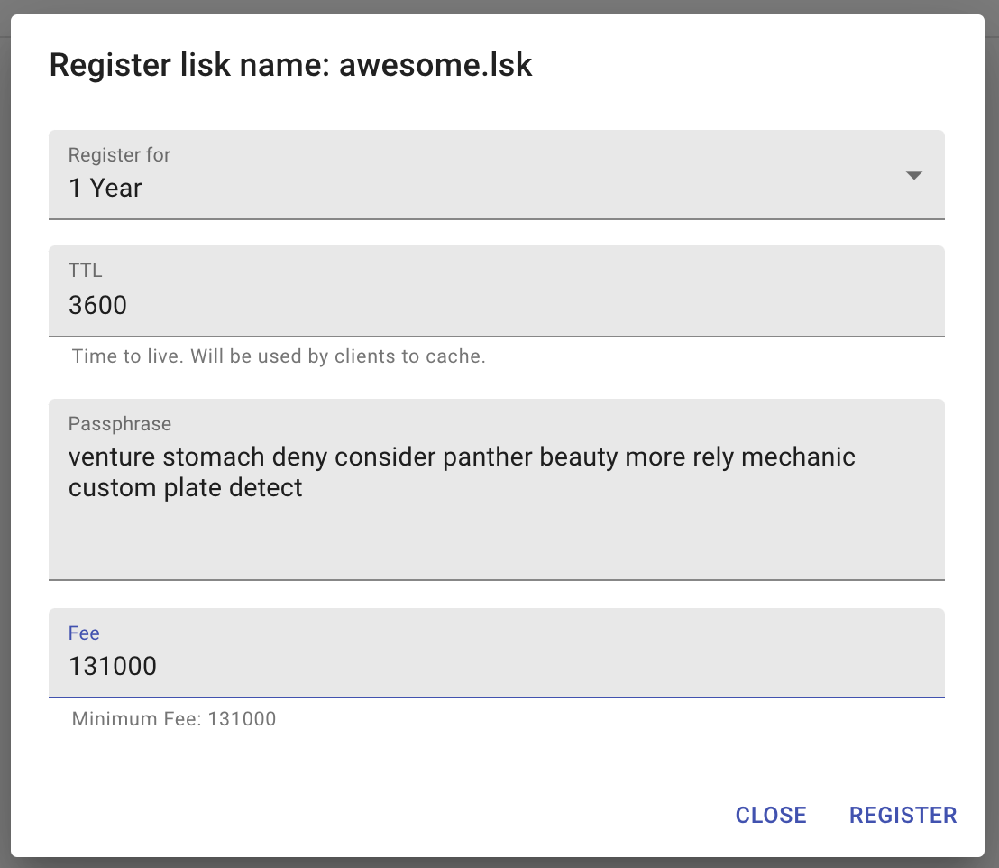
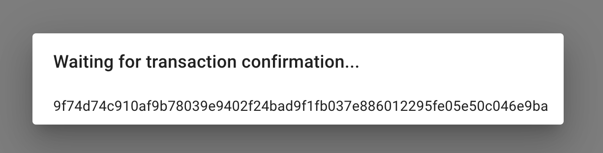
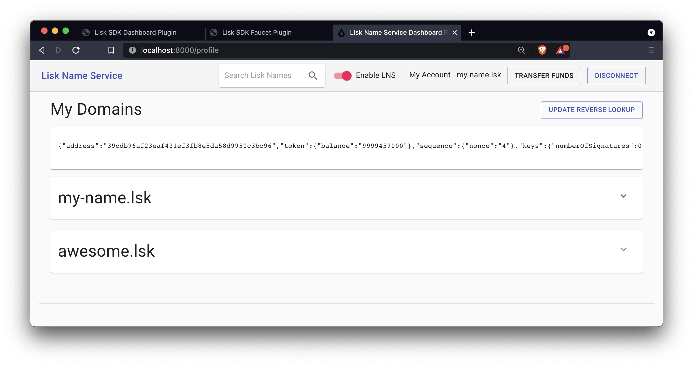
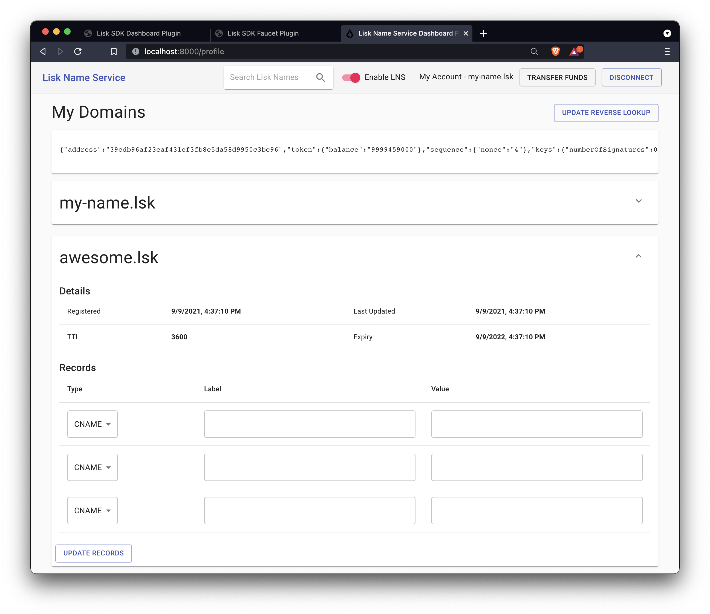

Chapter 2: Frontend
Using a plugin as frontend
The SDK Dashboard plugin is convenient to use during development of the blockchain application, as it offers a simple way to interact with the blockchain application through a user interface. To make the application more user-friendly, add a frontend which is specialized for the respective use case of the LNS application.
For the LNS app, we want to provide a simple frontend as a plugin, which is registered to the LNS blockchain application. See the Frontend & Backend section for more information about the different possibilities to provide a frontend for a blockchain application.
The React frontend application
A simple React.js web application is used as a frontend. The development of the React application is not covered in detail in this tutorial. Instead, use the existing React frontend in the klayr-sdk-examples repository and see how it can be included as a standalone UI plugin for a blockchain application.
| If you wish to learn more about how to develop a React frontend application, check out the React.js documentation. |
cd .. (1)
git clone https://github.com/KlayrHQ/klayr-sdk-examples.git (2)
cp -R klayr-sdk-examples/tutorials/klayr-name-service/lns-dashboard-plugin klayr-name-service/lns-dashboard-plugin (3)| 1 | Navigate out of the klayr-name-service folder. |
| 2 | Clone the klayr-sdk-examples repository. |
| 3 | Copy the LNS Dashboard plugin to the root folder of your LNS blockchain application. |
As you may notice when viewing the files, the LNS Dashboard plugin is based on the code of the Dashboard plugin from the Klayr SDK Framework.
The file structure of the UI plugin is basically a merge of a React.js application and a Klayr plugin.
The main logic of the React application is located under lns-dashboard-plugin/src/ui/, and the main logic of the LNS UI Plugin is located in lns-dashboard-plugin/src/app/.
Adding the plugin to the LNS blockchain application
Open the package.json file and add the downloaded LNS Dashboard plugin to the dependencies:
{
// ...
"dependencies": {
"lns-dashboard-plugin": "file:../lns-dashboard-plugin"
// ...
}Now open plugins.ts, import the UI plugin, and register it with the application as shown below:
import { Application } from 'klayr-sdk';
import { DashboardPlugin } from "@klayr/framework-dashboard-plugin";
import { FaucetPlugin } from "@klayr/framework-faucet-plugin";
import { LNSDashboardPlugin } from 'lns-dashboard-plugin';
export const registerPlugins = (app: Application): void => {
app.registerPlugin(DashboardPlugin);
app.registerPlugin(FaucetPlugin);
app.registerPlugin(LNSDashboardPlugin);
// Adjust the config of the LNSDashboardPlugin
app.overridePluginOptions(LNSDashboardPlugin.alias, {
applicationUrl: `ws://localhost:${app.config.rpc.port}/ws`,
port: 8000,
});
};Save and close plugins.ts.
Restart the LNS blockchain application to apply the changes.
./bin/run startAfter the application has loaded, it is possible to acceess the LNS Dashboard under http://localhost:8000.
Use the credentials of the account that was newly created in the previous step Create new account of Chapter 1 to connect to the LNS frontend.
In the top right corner you will now see the domain that was defined as reverse lookup for the account address.
If you tick off the slider Enable LNS, the address of the account will be displayed again, instead of the domain name.
By clicking on your account you will reach the following page, which contains all important information about your account, and the domain names that are registered for this account. Currently, one domain name is registered to the account. This was done in the step Register Domain of Chapter 1 via the Dashboard plugin.
The new TXT record, which was added to the LNS object, can also be seen.
Go back to the index page of the LNS Dashboard and search for a new domain name to add to your account.
The LNS Dashboard will automatically check its' availability. If no other user has registered this domain at the moment, it will provide a link to a dialog to register this new domain.
In the screenshot below, searching for the domain `awesome.kly`is depicted, and as can be seen here, it is still available.
Click on the Register link to open the dialog to register the domain.
The minimum fee of the Register transaction is calculated automatically, after all required transaction data is pasted in the fields. Please ensure to always use at least the minimum fee for the transaction, or it will be rejected by the blockchain application.
Click on the Register button to send the domain name registration to the LNS blockchain application.
Wait for confirmation that the LNS app has received your transaction.
 
Now return back to your account page. The new domain name should now be visible there.
 
Unfortunately, as can be seen on the top right, our address is still resolving to the my-name.kly domain (if LNS is enabled).
So now update the reverse lookup of the account to point to the new domain name awesome.kly.
Open the Dialog for updating the reverse lookup by clicking on the Update reverse lookup button in the top right.
Choose awesome.kly from the dropdown menu, enter the account passphrase and the minimum fee.
Click the Update button to update the reverse lookup entry for this account.
As a result, it is possible to verify that the LNS Dashboard now resolves the account address automatically to the new domain name awesome.kly.
Try to search again for the domain name awesome.kly.
The search results should now indicate that this domain name is already reserved.
It is recommended to fully familiarize yourself with the LNS application UI before moving on.
The development of the frontend and backend of the LNS application is now complete, and the application has all the features that were described in the LNS application overview at the top.
In the next chapter, the LNS application CLI will be enhanced with commands specific to the LNS module. This allows interaction with the blockchain application directly via the command-line, which can be beneficial for developers and/or node operators.